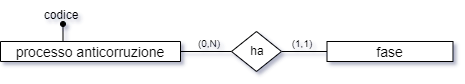
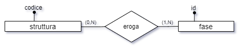
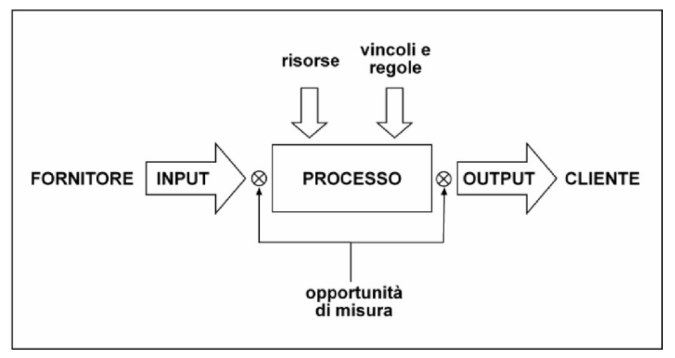
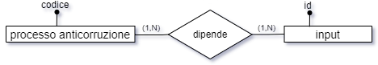
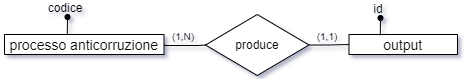
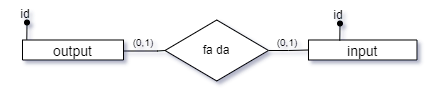
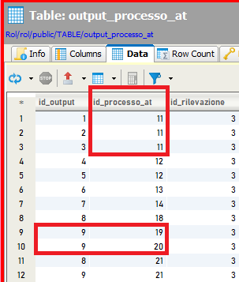

In precedenza è stata esaminata la strutturazione dei processi censiti dall’anticorruzione determinandone 3 livelli:
macroprocesso
processo
sottoprocesso
Tuttavia vi è un quarto livello che bisogna sicuramente rappresentare e che corrisponde alle fasi (anche chiamate “attività”) in cui i processi (ed eventualmente i sottoprocessi) si articolano.
Nella letteratura sulla mappatura dei processi, normalmente le fasi costituiscono un’ulteriore specificazione di dettaglio dell’ultimo livello di descrizione dei processi, quindi, nel caso specifico, dovrebbero essere l’articolazione interna dei sottoprocessi. Siccome, tuttavia, nel dizionario dei processi censiti a fini anticorruttivi i sottoprocessi sono stati previsti ma non identificati fin da subito, si è deciso di procedere associando le fasi sia ai processi sia ai sottoprocessi, in modo ortogonale.
Una singola fase deve avere almeno un processo associato (altrimenti non avrebbe senso la sua esistenza) e, al più, può essere associata ad un solo processo (vi possono essere fasi aventi lo stesso nome, ma si tratta in tal caso di semplici omonimie).
Il processo censito dall’anticorruzione, dal canto suo, può avere nessuna o molte fasi associate.
(Stesso tipo di relazione sussiste tra la fase ed il livello di maggior dettaglio, ovvero il sottoprocesso censito con finalità anticorruttiva. Nel contesto di questa analisi - tranne ove specificamente indicato - il termine “processo” è utilizzato per designare, indifferentemente, processi e sottoprocessi censiti a fini anticorruttivi).

Per quanto riguarda invece il livello di aggregazione maggiore, non è stata stabilita la possibilità di strutturare in fasi un macroprocesso perché questo è di livello troppo alto per suddividerlo direttamente in fasi e il suo “spacchettamento” identificherà quindi processi, non fasi.
Un’altra associazione si può avere tra la fase ed il rischio corruttivo; è infatti possibile pensare di associare, facoltativamente, una specifica fase ad uno specifico rischio corruttivo. A differenza della relazione tra il processo e la fase, quella tra il rischio e la fase è di tipo n : m dal momento che non solo uno stesso rischio può essere associato a più fasi, ma anche una specifica fase può essere associata a più rischi. La relazione, quindi, va normalizzata.
La relazione che sussiste tra la fase e la struttura ha il compito di mappare quale/i struttura/e interviene/intervengono, in qualità di “struttura erogante”, nell’attuazione della fase.
Su una stessa fase potrebbero contribuire più strutture, mentre su un’altra fase potrebbe non esservi il contributo di alcuna struttura “gregaria” ma solo della struttura “capofila”, ovvero di quella che eroga il processo. Anche in quest’ultimo caso, però, l’associazione va valorizzata, perché non si può assumere a priori che la struttura capofila sia sempre associata a ogni fase di un processo che eroga; una, o più, delle fasi, infatti, potrebbero essere in carico a strutture che non hanno niente a che fare con la struttura che eroga il processo.

Quindi questa relazione va valorizzata esplicitamente anche per la struttura capofila; in pratica, dal punto di vista della fase non ha senso la distinzione tra struttura capofila e struttura gregaria: una fase deve essere sempre associata ad almeno una struttura, che è quella che la eroga; che poi tale struttura coincida con la struttura che sovrintende al processo o meno, non ha alcun significato a livello dell’associazione tra la fase e la struttura stessa.
Altre entità introdotte sono state l’INPUT e l’OUTPUT. Si tratta degli elementi che, negli schemi classici di mappatura dei processi organizzativi, di tipo ingegneristico, rispettivamente danno origine al processo stesso e rappresentano i risultati prodotti dal processo.

Un input è caratterizzato, oltre che dai normali attributi, da una relazione verso i processi di tipo n : m; infatti, non solo uno stesso processo potrebbe essere innescato da più di un input, ma anche uno stesso input potrebbe dare origine a più processi distinti; lo stesso discorso vale per il sottoprocesso. Invece, si è evitato di mappare la associazione tra il macroprocesso e l’input perché gli input dei macroprocessi potrebbero facilmente derivare dall’unione degli input dei loro processi: quindi, mappato il dato con granularità più fine, il dato aggregato potrà essere facilmente ricavato (in sostanza, gli input di un macroprocesso sono l’unione degli input dei suoi processi).

A differenza degli input, che non solo potrebbero concorrere in molti a scatenare uno stesso processo, ma potrebbero essere condivisi tra più processi, il processo dell’output dev’essere unico.
Viceversa, uno stesso processo potrebbe produrre più di un risultato, per cui un processo può avere più output contemporaneamente

Uno specifico output di uno specifico processo potrebbe fare da input di un altro processo, per cui vi è anche una relazione 1 : 1, facoltativa, tra queste due entità

Input e Output sono enumerati in rispettive entità dizionario (registro degli input e registro degli output).
Infatti, gli Input sono in relazione n : m con i processi.
Anche gli Output, pur essendo in linea di massima legati a un solo processo, sono comunque stati implementati utilizzando una tabella di relazione tra output e processo, per cui sia gli input sia gli output vanno riutilizzati (ciò che viene inserito ex-novo è una riga nella relativa relazione).
In altri termini, se un nuovo input da inserire su un processo si chiama come un input precedentemente inserito, va utilizzato l’input precedentemente inserito.
Questo discorso vale anche per gli Output.
NOTA: Tabella Input, campo “interno”, tipo boolean: se true implica che l’input proviene da soggetti interni all’ateneo, se false da soggetti esterni.
